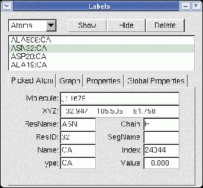

Next: Color Window
Up: Description of each VMD
Previous: Graphics Window
Contents
Index
Subsections
Labels Window
Figure 5.8:
The Labels window
|  |
The Labels window is used to manipulate the labels which may be placed on
atoms, and the geometry monitors which may be placed between atoms.
Labels are selected with a mouse, as discussed in section
5.1.2. Once selected, the Labels
window can be used to turn different labels on or off or to delete them
entirely. Also, labels displaying geometrical data such as bond
lengths may be graphically displayed using this window.
Label categories
The Category chooser (in the upper left) is used to select which
category of labels to manipulate. The different label categories include:
- Atoms, which are shown as a text string next to the atom listing
the name and residue of the atom;
- Bonds, which are shown as dotted lines between the atoms with the
bond length displayed at the bond midpoint;
- Angles, which are shown as dotted lines between the three atoms with
the angle displayed at the center of the defined triangle;
- Dihedrals, which are shown as dotted lines between the four atoms
with the dihedral angle (the angle between the planes formed by the first
three atoms and the last three atoms) shown at the midpoint of the
torsional bond.
- Springs, which are shown as dotted lines between the atoms with the
bond length displayed at the bond midpoint;
All the labels for the selected category which have been previously
added are displayed in the browser in the center of the window. The
line itself contains from 1 to 4 atom names, depending on the
category; the atom names have the form
<residue name><residue id>:<atom name>
followed by either (on) or (off). The last word
indicates if the label is turned on or off.
Modifying or deleting a label
A label can be turned on or off without deleting it, by selecting the
label in the central browser and pressing the Hide button. To
turn it back on, select it again then press the Show button.
Press the Delete button to delete it. This browser allows
multiple selections, which, for example, allows you to delete several
labels at once. To select everything in the current category, press
Select All; to unselect them, press Unselect All. If
nothing is selected, the action is applied to everything. Thus, one
way to turn everything off is to press Unselect All then press
Hide. (It may seem counterintuitive, but it was done this way
so all the labels could be deleted by just pressing Delete.)
Pick information
The Picked Atom tab displays
information about the last atom picked by the mouse. This information
is also echoed to the vmd console. The data in the will
remain in until a new label is selected by the mouse.
Information about the following fields is identified:
- Molecule - the name of the molecule referenced
- XYZ - the position of the atom in 3D space
- Resname - the type of the amino or nucleic acid to which this atom
belongs
- ResID - the internal VMD ID number of the entire residue to which
the particular atom belongs. E.g., ResId for an atom of a protein is the
same as the residue number of that atom as listed in its PDB file.
- Name - the name of the atom as it appeared in the coordinate file
- Type - the type of the atom, as determined by an internal VMD match-up
of the given name to a likely atom type associated with that name
- Chain - if the coordinate file contained data in the ``Chain'' field
for this atom, then that data is given here.
- Segname - the name of the segment to which this atom belongs
- Index - the internal VMD index used to identify the atom; this is
useful for specifying selection syntax to generate different
representation styles for particular atoms. For PDB files Index corresponds
to the atom number listed in the file minus 1 (so that the index starts with
0).
- Value - the calculated length of bonds, angles, or
geometric measurements performed by the selected label
Plotting a label's value
If the label has a numeric value (such as a bond length geometry
monitor), it is easy to graph the change of the value over time (for
multiple frames in an animation). The Graph button calls a
Tcl script to plot the data for the selected labels. You can create
your own script to handle label plotting simply by creating a Tcl proc
named vmd_labelcb_user. The proc should accept three arguments.
Have a look at the default scripts in the VMD scripts directory, found in
the VMD installation directory under scripts/vmd/graphlabels.tcl.
If no supported graphing program is available, a dialog box will be
presented which will allow you to save the values of the labels to a file.
Next: Color Window
Up: Description of each VMD
Previous: Graphics Window
Contents
Index
vmd@ks.uiuc.edu